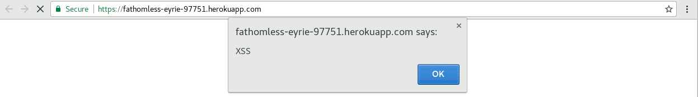

Comp20: Web Programming
Assignment 4: Security and Privacy Assessment of Client-Side and Server-Side
Introduction
Historic Landmarks is a web application that renders a map to clients, showing both nearby people who also checked-in via the app and landmarks within a mile's radius from the user. Historic Landmarks has both client-side and server-side ends. As a hired security consultant, I found and resolved a few major security and privacy issues on Heroku Landmarks web app. While I do share some of my findings and insight on this page, my analysis is at best incomplete, as I record only a handful of security and privacy concerns.
Methodology
The Open Web Application Security Project documents that over 65% of web applications are vulnerable to a list of cyber attacks. Using OWASP's top ten basic security analysis, I hunt for security bridges in Historic Landmarks. In addition, I look for privacy issues with regards to failure to conceal any client data, including real names and coordinates. For sending data to Heroku Landmarks, I use the web browser for GET requests and curl for POST requests.
Abstract of Findings
Historic Landmarks is suceptible to injection attacks. Hackers are able hijack the app for other corrupt purposes by sending data to the app servers. In addition, the app violates privacy concerns by displaying clients' latitude and longitude data without permission. Furthermore, Historic Landmarks database, where users information are stored, is insecure as users are able to retrieve not just their data but others' data from the database without due consent. Given such threats, Historic Landmarks is not attack-proof and warrants app users neither full privacy nor security of their data.
Issues Found
#1
- Issue: Cross Site Scripting (XSS)
- Location or page where issue was found: /sendLocation POST route on server
- Severity of Issue: High. XSS presents users with all sorts of fraudulent web content including malicous code injection and unwanted messages. Significant amount of data stored as cookies can also be stolen. XSS also renders the app non-functional in most cases.
- Description of issue: An attacker inputs data to execute a certain javascript function. For example, the shell command,
$ curl --data "login=<script>alert('XSS ATTACK');</script>&lat=10&lng=10" https://fathomless-eyrie-97751.herokuapp.com/sendLocation
alerts clients contrary to the app's intended purpose.
- Proof of vulnerability: 
- Resolution: All special characters can be removed via the following command: in the example above, assuming "var login" holds login data,
$ login.replace(/[^\w\s]/gi, '');
#2
- Issue: Mongo Database Injection and Client Security
- Location or page where issue was found: /checkins.json GET route on server
- Severity of Issue: High. By revealing clients private data, a database injection significantly hampers credibility that could even lead to getting sued. Do I need to mention more?
- Description of issue: After I made a legitimate checkin into the web app, I searched for a login information via get request to /checkings.json using "login[$ne]=name" as query string, and I got other clients'
data
- Proof of vulnerability:

- Resolution: Never Ever Trust User Data. Use
$ JSON.parse()
or the validator package, eg. $ if (!validator.contains(login, '$ne')) search_database
#3
- Issue: Privacy Violation and Sensitive Data Exposure
- Location or page where issue was found: / GET route on server
- Severity of Issue: High. Heroku Landmarks reveals the latitude and longitude of clients. Random users are able to get others' latitude and longitude coordinates. Robbers for instance, could locate a client's address via their coordinates without consent of the victim.
- Description of issue: On hitting the link to the homepage, users data are displayed.
- Proof of vulnerability:
- Resolution: Do you render another user's data on the page. Simple delete code that parses database information to display clients' data on homepage.
Conclusion
Going forward, I will explore other OWASP treats and recommend to avoid them accordingly. For instance, it's a fair bet that the app is vulnerable to A10-Unvalidated Redirects and Forwards, where attackers can redirect victims to phishing or malware sites, or use forwards to access unauthorized pages. Other possible tests to be done in the future include
- Run a infinite loop that populates entire database with Never Ever Trust User Input!
- Using Firefox's Tamper Data plugin to change form fields, cookies and hidden fields.
- Use web proxies to redirect input data, averting max character limits
I recommend that the app is taken and audited. Until it is secure-verified, it should remain retracted to avoid online harm to users.